時間を設定 → 出発
10・25・45・60分のプリセットか、時・分・秒のカスタム設定を選べます。活動名は任意です。
取材・レビュー・コンテンツ制作のための公式資料
Dayroadは、ドット絵のドライブ、記録ノート、育つHomeをひとつにつなぐiPhone向け集中タイマーです。取り組むことを決めて時間を重ね、記録を振り返り、自分の空間を整える。ひと区切りついたら、カフェでひと休み。
対応端末と詳しい互換性はApp Storeでご確認ください。
始めるのが難しいとき、つい別のアプリを開いてしまうとき。取り組むことと時間を決めたら車は自動で走り、ユーザーは勉強・読書・作業に向き合います。
10・25・45・60分のプリセットか、時・分・秒のカスタム設定を選べます。活動名は任意です。

Focus Driveは自動運転でスタート。タイマーを一時停止・再開でき、残り時間の表示も切り替えられます。

選んだアプリやカテゴリをブロックする任意の機能です。スクリーンタイムの許可が必要で、報酬条件は変わりません。
Webサイトのブロックには対応していません。 ロック画面のライブアクティビティで残り時間を確認でき、終了通知も受け取れます。対応端末・許可・通知設定により動作は異なります。
Homeの1段階目でポストを開放すると、記録ノートを利用できます。要約・カレンダー・分析・記録を行き来して、実際に集中した時間を振り返ります。
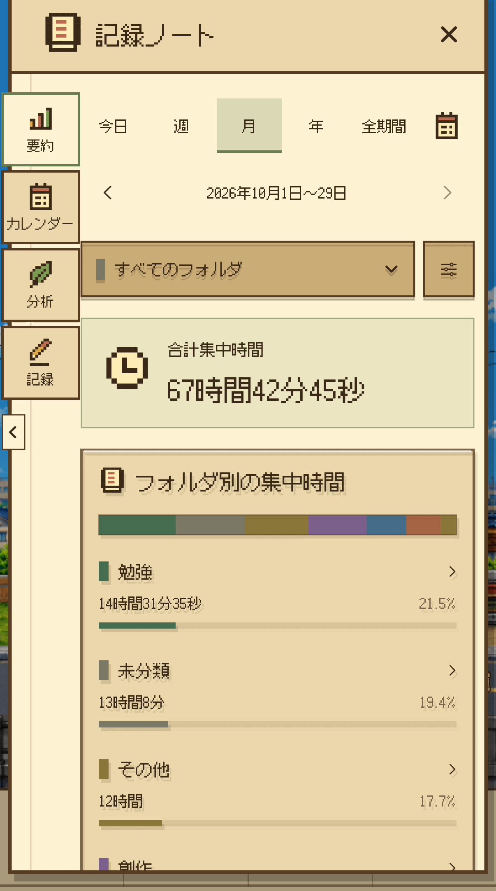
期間ごとの合計集中時間、推移や比較を確認。「詳しく見る」では完了率・連続日数・累計集中のバッジも見られます。
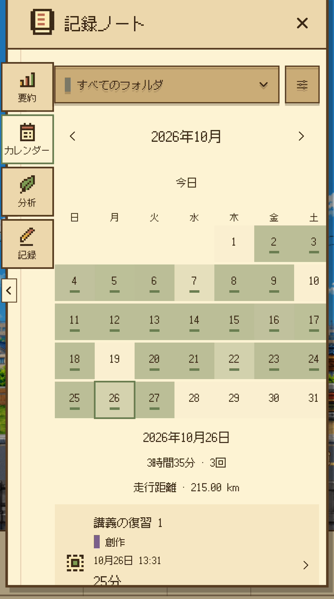
カレンダーで日付を選び、その日の集中時間とセッションを確認。日付や期間を変えて過去の記録をたどれます。
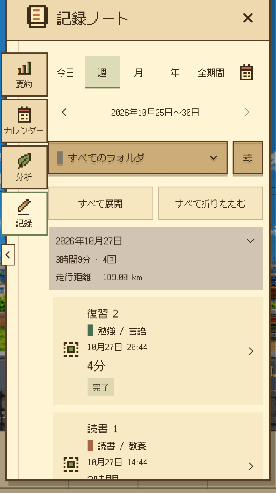
一覧と詳細で設定時間・実際の集中時間・完了／途中終了を確認できます。記録の保存とスタンプの付与は別の仕組みです。
統計や活動名は撮影用のサンプル記録です。実際のユーザーの成果や、一回の連続した記録を示すものではありません。
名前を入力して始めても、保存した活動を選んでも。活動とフォルダで時間を整理し、分析から自分の集中習慣を振り返れます。
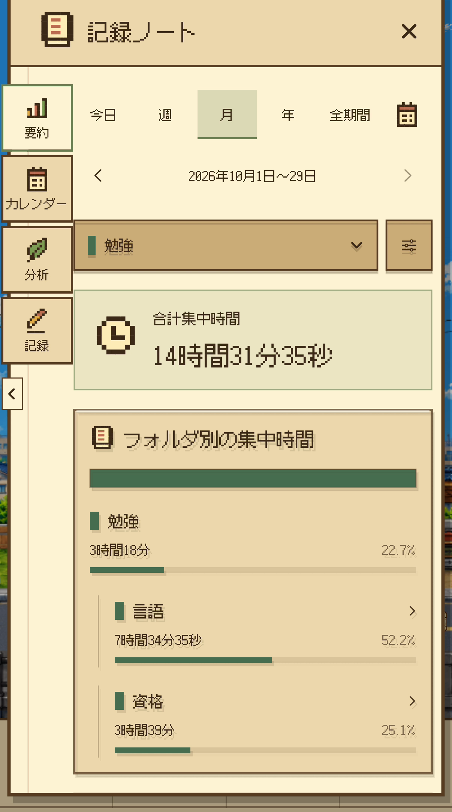
フォルダは最大2階層。親フォルダには下位フォルダの時間も含まれます。フォルダ別・活動別の集中時間を確認できます。
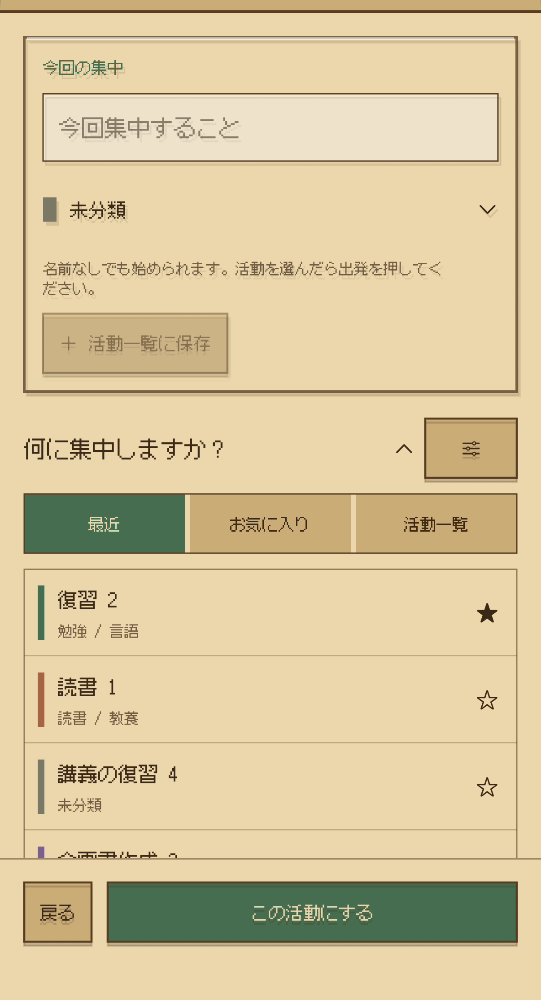
活動名を保存・再利用し、最近使った活動やお気に入りから選択。記録の名前や分類を修正し、フォルダで絞り込めます。
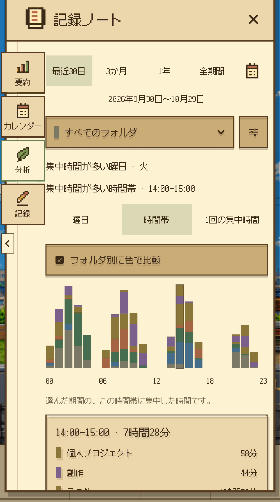
期間とフォルダを選び、曜日・時間帯・一回の集中時間を分析。フォルダの色で比較し、グラフの区間も確認できます。
記録の名前・分類を修正しても、実際の集中時間やスタンプ報酬を変更するわけではありません。画面は撮影用サンプルです。
実際の集中時間が累計25分になるごとにスタンプを1個獲得。端数は次の集中へ持ち越し、必要な数を貯めてHomeで自分で使います。

完了・途中終了したセッションの実際の集中時間を記録します。画面は25分の集中完了とスタンプ獲得の場面です。

次の段階に必要なスタンプを貯め、自分で選んで開放します。必要な数は段階によって異なります。

集中の記録と育つ空間を、次の集中を始める小さな目標にする設計です。
集中 → 記録 → スタンプ・自分で開放 → Homeの成長・カスタマイズ → 次の集中
日本のHomeを35段階まで完成すると、その地域の残りスタンプと繰越時間は0になり、以後のスタンプ付与は終了します。実際の集中時間・セッション記録・バッジは引き続き蓄積されます。
目に見える記録と育つ空間が、次の集中を始める小さな目標になるよう設計しています。
各場面は別々に撮影した画面例で、一回の連続した集中記録ではありません。
小さな家から、変わっていく庭や暮らしの景色へ。Homeは35段階で変化します。ポストは1段階目、車のカスタマイズは2段階目、アバターは3段階目、表札は5段階目で開きます。


Homeの成長に合わせて、カスタマイズメニューが開きます。開放したら、いつもの下部メニューから自分の好みを選べます。
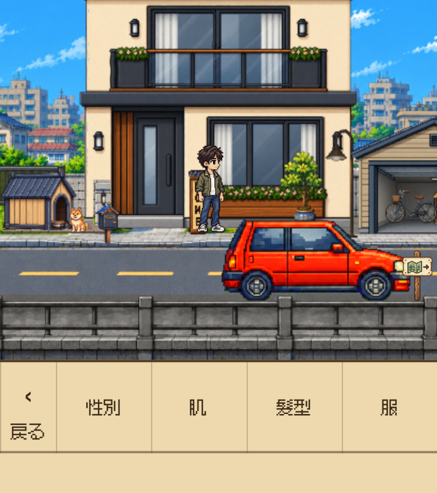
アバターの性別・肌・髪型・服を選べます。開放したカスタマイズで、風景の中の自分を表現します。
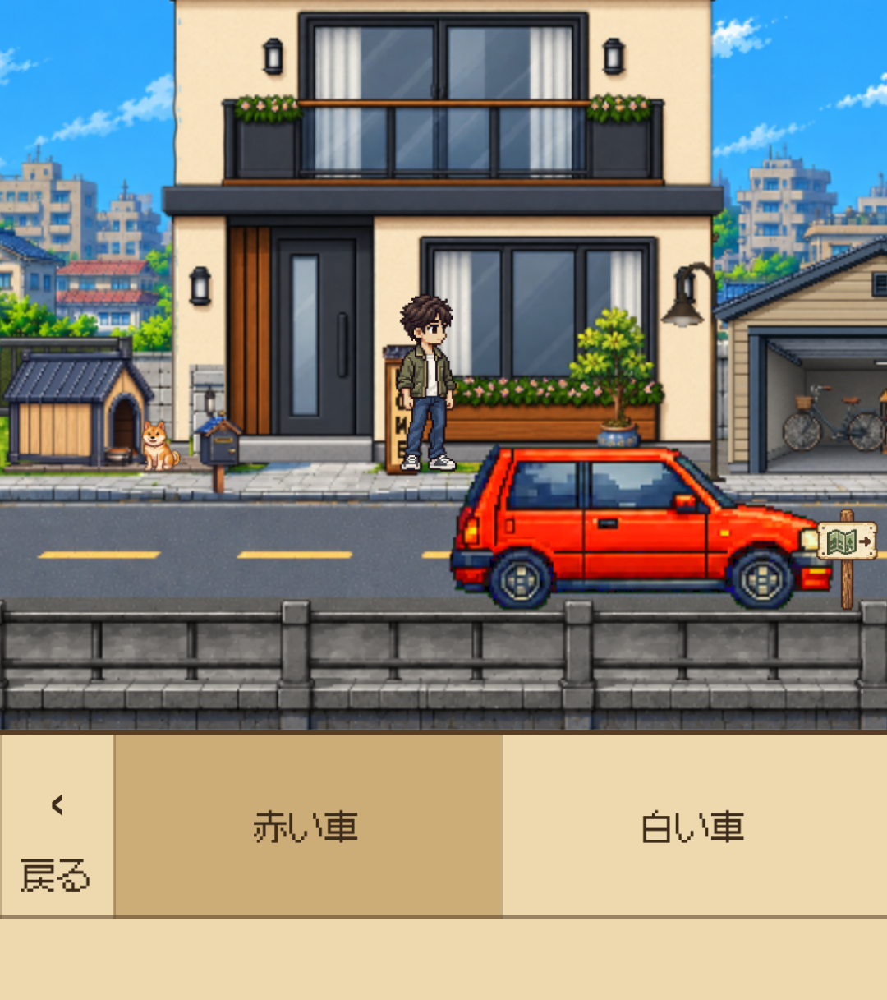
赤い車と白い車を選べます。選択した車はHomeやドライブに反映されます。
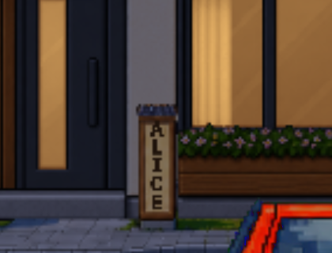
好きな名前を入力し、家の前の表札に反映できます。開放前は表札メニューが表示されません。
メニューは実際に開放したHomeの段階に応じて利用できます。スタンプを持っているだけで自動的に開く仕組みではありません。
集中は自動運転を中心にスタート。別のドライブ設定で自動・手動操作、速度、Top・Side Viewを選べます。時間帯は自動または手動、天気は晴れ・雨から手動で選びます。
 01
01 02
02 03
03
音楽・環境音・効果音を調整し、カフェで休憩したり再出発したり。Homeでのアバターや犬のしぐさ、周囲の景色が、集中と休息の間を彩ります。
積み重ねた時間と、自分の空間を長くつなぐために。保存・バックアップ・言語・旅先の基本をまとめました。
端末保存、個人用iCloud同期、JSONファイルの書き出し・復元に対応。同期はAppleアカウント、iCloud、通信状態に左右されます。大切な記録は別途バックアップも保管してください。
Homeの旅の地図帳で現在の日本エリアを確認できます。現在提供しているFocus Driveの舞台は日本です。他地域の表示は利用可能なコンテンツを意味せず、追加地域の提供・購入範囲は別途案内に従います。
アプリUIは韓国語・日本語・英語に対応しています。対応端末と互換性はApp Storeでご確認ください。
Free Driveは時間制限なく、ずっと無料。集中の報酬は獲得できません。
日本の風景を舞台にしたFocus Driveを累計75分まで無料で体験できます。その後はFocus Drive Passの買い切りで継続できます。サブスクリプション、自動更新、体験終了後の自動課金はありません。
パスは現在の日本を舞台にしたFocus Driveが対象です。追加地域は別売りとなる場合があります。アプリ内で購入を復元できます。
公式App Store表示確認：KR ₩9,900・JP ¥1,000・US $6.99（2026年10月29日）。実際の支払額は購入画面の現地表示をご確認ください。
ZIP：画像・ブランド素材・3言語の報道用テキスト・使用案内。PDFと動画は個別にダウンロードできます。
アプリUIは実際の日本語画面です。風景は共通素材で、記録ノートの数値・活動は撮影用サンプルです。別々の撮影を一回の連続した記録として紹介しないでください。WebPは元の画素を保持する可逆圧縮です。
晴れた昼の街WEBP ↓上から見るドライブWEBP ↓Home・0段階WEBP ↓Home・20段階WEBP ↓Home・35段階WEBP ↓カフェの風景WEBP ↓雨の夕方WEBP ↓集中時間の設定・出発WEBP ↓集中終了・スタンプWEBP ↓Home・自分で開放WEBP ↓Home・開放後WEBP ↓ HomeのメニューWEBP ↓
HomeのメニューWEBP ↓ カフェのメニューWEBP ↓Focus Lockの設定WEBP ↓
カフェのメニューWEBP ↓Focus Lockの設定WEBP ↓ 集中時間を選択WEBP ↓Focus Drive・タイマーWEBP ↓記録ノート · 要約撮影用サンプル記録WEBP ↓記録ノート · フォルダと下位階層撮影用サンプル記録WEBP ↓
集中時間を選択WEBP ↓Focus Drive・タイマーWEBP ↓記録ノート · 要約撮影用サンプル記録WEBP ↓記録ノート · フォルダと下位階層撮影用サンプル記録WEBP ↓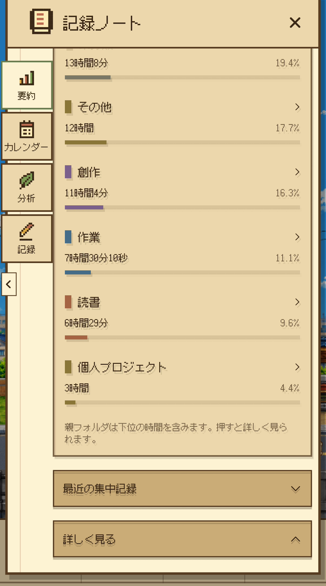
記録ノート · フォルダ別の合計撮影用サンプル記録WEBP ↓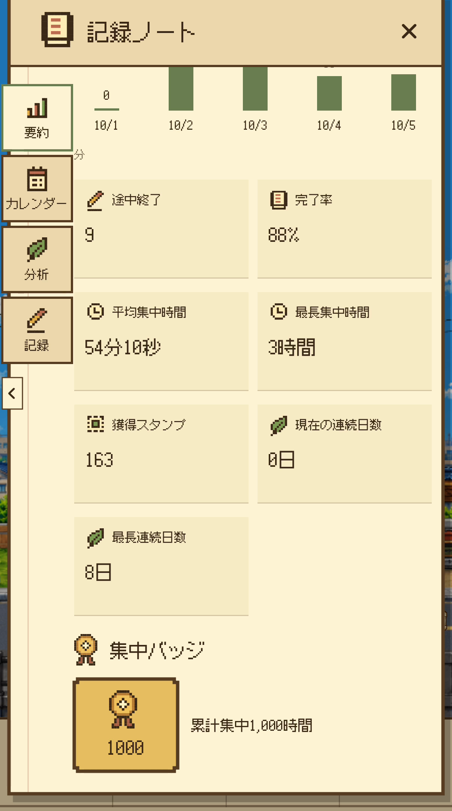
記録ノート · 統計とバッジ撮影用サンプル記録WEBP ↓記録ノート · カレンダー撮影用サンプル記録WEBP ↓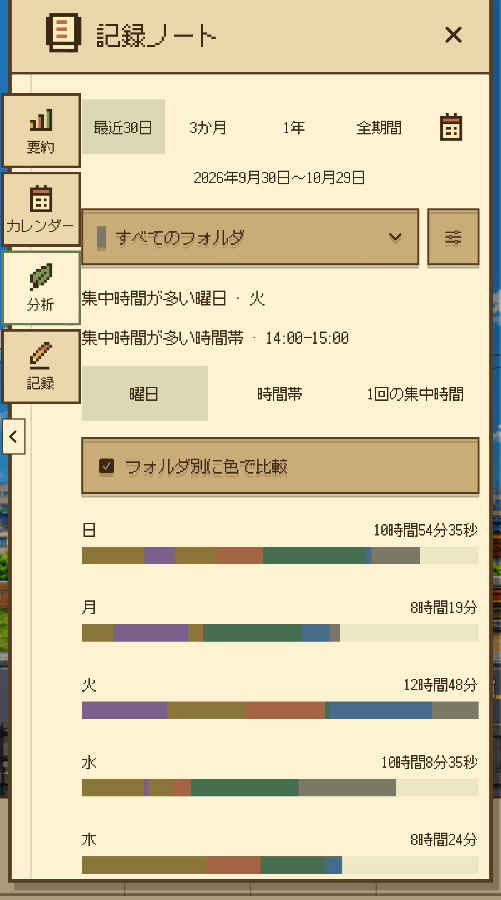
記録ノート · 曜日別の分析撮影用サンプル記録WEBP ↓記録ノート · 時間帯の分析撮影用サンプル記録WEBP ↓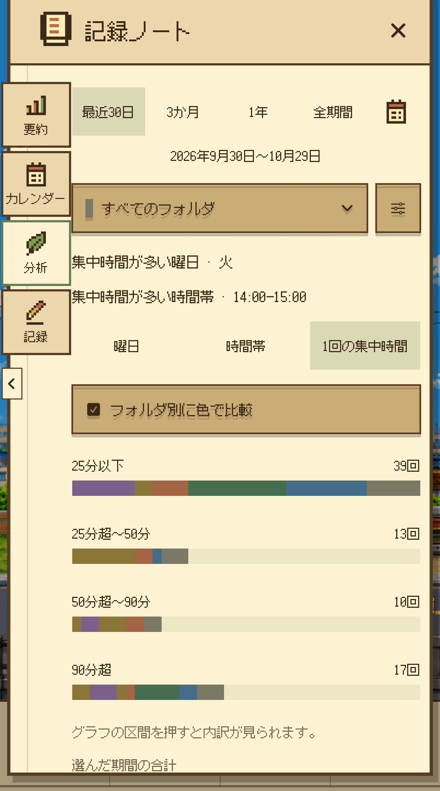
記録ノート · 一回の長さの分析撮影用サンプル記録WEBP ↓活動の選択 · 最近とお気に入り撮影用サンプル記録WEBP ↓アバターのカスタマイズWEBP ↓車のカスタマイズWEBP ↓表札のカスタマイズWEBP ↓記録ノート · セッション一覧撮影用サンプル記録WEBP ↓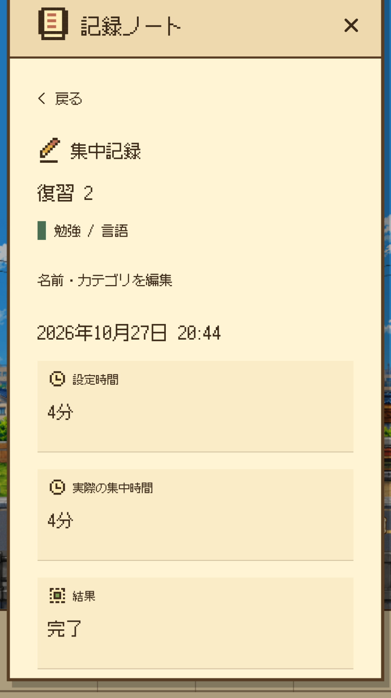
記録ノート · セッション詳細撮影用サンプル記録WEBP ↓記事・レビュー向けに編集したプロモーション動画です。記録ノートの数値・活動は撮影用サンプルで、一部の場面は実際のアプリ映像とメニュー映像を組み合わせています。App Store審査を通過したApp Previewとして紹介しないでください。
ドット絵のドライブで集中し、記録ノートで振り返り、Homeを育ててひと休みするiPhone向け集中タイマー。
Dayroadを紹介する記事・レビュー・動画・ブログにご利用いただけます。製品名や画面を誤解させる改変はお控えください。クレジット推奨：Dayroad / Junho Kim。素材の単独再販売、他製品への転用、音楽の抽出は認められません。その他の用途はお問い合わせください。
Dayroadの開発者
 ワードマーク · SVG ↓
ワードマーク · SVG ↓